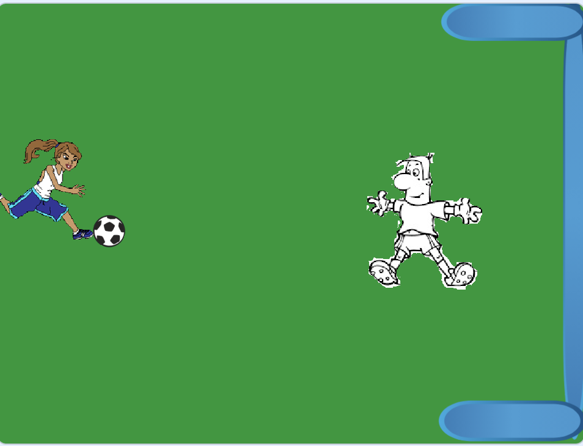

Portero, Jugador y una porteria.
Haremos un Escenario que sea totalmente verde.
El juego consiste en que intentaremos hacer gol. La pelota se lanzara con la tecla de "espacio". Y cuando de en cualquier parte de la porteria dira donde ha dado la pelota.

El jugador lo posicionamos para que la pelota quede a la altura del pie.
La pelota se lanzara cuando demos a la tecla "espacio". Usaremos un bloque de "al presionar tecla espacio".
Crearemos un bloque que se llame "Apuntar direccion". Donde posicionaremos la pelota y apuntaremos en dirección con un número aleatorio, para
que nunca dispare hacia el mismo sitio.
Para que se mueva la pelota haremos un "repetir hasta que toque Portero o Jugador o Fondo Portería o Palo inferior o superior o borde.
Y cuando toque algunos de estos objetos saldrá del repetir y preguntaremos que es lo que ha tocado y pondremos un "decir .... durante 2 segundos"
Y volveremos a llamar al bloque de "Apuntar direccion" para que la pelota se posicione y vuelva apuntar a un número aleatorio.
El jugador lo posicionaremos delante de la porteria y se movera con las teclas arriba y abajo.
El resto de los Objetos que será la porteria las posicionamos cada uno en su lugar.
Y el juego quedaría así.

Para ver el juego terminado pulsa
aquí.
Para descargarte el juego terminado pulsa
aquí.